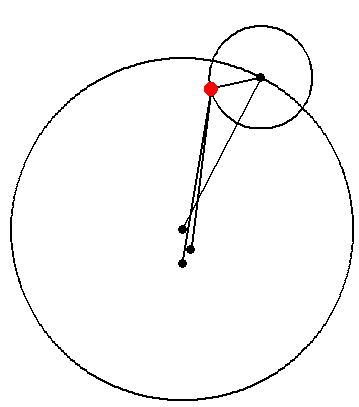
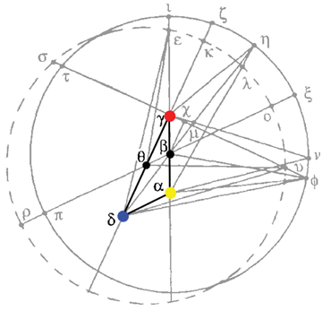

Chapter 5
Typo notice: about 2/3 of the way down page 146, the sentence
For example, at η the angle μνα is much less than γηα.
should read:
For example, at η the angle μηα is much less than γηα.
Mean and Apparent Oppositions
Chapter 5: First Inequality
We now know that the hypotheses of Ptolemy, Copernicus, and Brahe are equivalent "to within a hair's breadth." Now let's see what happens if we stop using the mean sun, and use the apparent sun instead. Will this change also be equivalent?
Two anomalies
What Kepler refers to as the First and Second "Inequalities" of planetary position, are described by Ptolemy in book IX of his Almagest:
“In the case of the research about the anomalies, the fact that there are two anomalies appearing for each of the planets, and that they are unequal in magnitude and in the times of their returns, works a good deal of confusion. For one of the anomalies is seen to have relation to the sun, and the other to the parts of the zodiac, but both are mixed together so it is very hard to determine what belongs to each.” (Almagest IX.2)
Mars, Jupiter, and Saturn are always observed to retrogress against the fixed stars when they are in opposition to the sun, and are seen to have their swiftest motion when in conjunction with it. These different motions: the planet's own motion around the zodiac and its anomalous behavior tied to the sun are known as the first and second inequalities, respectively. These two motions were separated by Ptolemy, as for Copernicus and Brahe, by taking observations of the planets while at opposition. Thus, the effect of the second, heliacal (solar) inequality could be eliminated, leaving only the theory of the first inequality. Ptolemy writes:
“We have used the positions observed when diametrically opposite the sun’s mean position, and from these we show the ratios of eccentricity and the apogees, since only in the positions so considered do we find the zodiacal anomaly [first inequality] set off by itself. For then there is no anomalistic difference with respect to the sun.” (Almagest X.6, emphasis added)
Now, what is the "mean sun"? The actual, true, apparent sun does not move at a constant rate in the heavens, but the imaginary mean sun does. (See the Almagest, book III.) When Copernicus creates his hypothesis, he keeps this fiction intact:
“For when Copernicus transformed the Ptolemaic hypothesis into his own general form, he supposed the observer to be stationed at some nearly motionless point near the sun, distant from the sun's own body by the entire eccentricity of the solar orb.” (p.142)and
“Copernicus, intending to carry over the Ptolemaic numbers into his own form of hypothesis, reckoned the eccentricities of the planets from the conjunctural center of the earth's uniform motion rather than from the sun.” (p.157)
Copernicus does not put the sun at the center of the world, but rather the "mean sun," the center of the earth's motion! It remained for Kepler to truly allow the sun to order the world.
Work to do:
We'll do five things here:
- Show that there is a difference between mean and apparent oppositions
- Change the observer (the sun) from the apparent to the mean sun without changing the orbit at all
- Change the observer and the line of apsides, while leaving the equant in the same position
- Cause the same result by changing the equant while leaving the observer in place
- Determine what effect these changes have on the first inequality
Mean and Apparent Oppositions
The true sun (yellow) and the mean sun (blue) both have moments of opposition with Mars, but they differ in an irregular way. The blue mean sun is the center of the earth's orbit, and the stationary red dot is the center of Mars's orbit. The animation moves out to the zodiac as it progresses.
It is clear from this animation that using the apparent instead of the mean sun will make a difference in when opposition is said to occur, and will result in different observations.
The Copernican Form (pp.141-142)
This is reasonably straightforward and simple, even if the language does not seem so at first. If you watch the same motion of a heavenly body from two different points of observation, it will appear different. This animation has points γ, α, and β in the center of the circle as in the diagram on page 141, and a red planet Mars, which travels to points η and θ. Since the fixed stars are immeasurably far away, an inclination between the lines from α to the planet and β to the planet means that α and β will see the planet at different places against the fixed stars.
Switching suns (pp.143-146)
“The question is raised whether one and the same true path of the planet in the heavens (this is presupposed) can present two sets of appearances, one to the observer at δ and another to the one at α, both proper to those places and both such as comply with and admit the Ptolemaic form of computation.
“If the planet were of equal speed at all parts of its orbit, the answer, according to what was said in chapter 3, is yes. But since, in terms of real and true elapsed time, the planet is slowest at one point on the eccentric, and fastest at the opposite point, the answer must therefore be, clearly not.” (p.145)
Here we animate what Kepler says. We'll watch Mars from two vantage points. Here you have the red Mars equant at γ, the yellow apparent sun at α, and the blue mean sun at δ. The planet Mars (red) is assumed to continue to move on the same path in the heavens, regardless of which sun is observing it. Lines of sight are extended from both suns ("observers") through Mars.
Obviously, looking at the planet from a different point of observation causes a huge shift! There's no way that measurements taken from the apparent sun could result in the same hypothesis as the mean sun. For example, the mean-sun planet appears to move slowest at ζ, not at ι as is the case for the apparent sun. We'd have to change the planetary hypothesis, if we wanted to use the other observer sun.
Changing the observer position and the line of apsides (pp. 146-150)
“The question is now raised, how much the path of a planet would have to be changed from its prior position if the same form of hypothesis is set up about δ, and how much this newly established hypothesis at δ will be at variance with the appearances as seen at α.” (p.146)
Kepler first tests out this proposed equivalence by drawing a new line of apsides, from δ through the old center β, creating new equant μ, but finds that it differs dramatically, both in changing the slowest position of the planet, and in changing how much its speed changes. (This is not yet animated.)
But, what if we drew a new line of apsides, δγ through the mean sun and the original equant, and created a new center for its eccentric at θ? This will move the planetary path, and will change the position of its slowest motion from ι to κ, but "through this felicitous combination it is brought about that the observer previously stationed at α has his observations pretty much unchanged, which is the only thing sought for here (p.147)." Here, the blue dot (δ) is the center of the earth's orbit (mean sun). The moving red and blue dots are the planet according to the two hypotheses, and the extending blue lines are the view from the mean sun of: (1) the mean-sun-hypothesis planet and (2) the apparent-sun-hypothesis planet. Kepler indicates that the greatest divergence, which occurs at angle υδφ, is 4'24". (We'll see the larger difference it makes for the second inequality in chapter 6.) In this animation, the difference is exaggerated to go along with Kepler's drawing, but you can still barely see the two blue lines separate.
Changing the equant position (pp.150-152)
Now, suppose it is not permitted to shift the observer (and it is not permitted by those who make the earth the center of the world...), and that the planet has been observed in several positions on the zodiac, always at opposition to the sun's mean motion... Comes now Kepler, wishing to change the observed positions and points at which the planet is at opposition to the apparent position of the sun rather than its mean position. From these positions and times he will have come up with another hypothesis, in which the observer would be left unmoved at δ or Α, but where the eccentricity would come out to be ΑΒ in a new eccentric ΒΙ, and the eccentricity ΑΓ of a new equant Γ, and there would be a new apogee Ι. The question now is whether, if the prior theorist combines the new eccentric BI with his original equalizing point γ, the computed equation and sidereal position of the planet will turn out much different from what he formerly had found using his eccentric γκ... The answer, arising from the equivalence of transpositions, is that the discrepancy is going to be extremely small. Its maximum... will not exceed five minutes... Consequently, the angle υδΦ, which previously was 4'24" is now 4'43". (pp. 151-152)
Now, in this animation, the angle υδΦ looks much larger than 4'43" (which is a tiny angle), but don't forget that this is an exaggerated animation. Using the actual numbers for the planets, the points are almost on top of each other, which wouldn't make for a good image.
Conclusion
The change of hypothesis resulting in a change from mean sun to apparent sun occasions a very small difference in the first inequality, less than 5'. But, we will see in chapter 6 that this is not the case with the second inequality!
| Next (Ch. 6) |